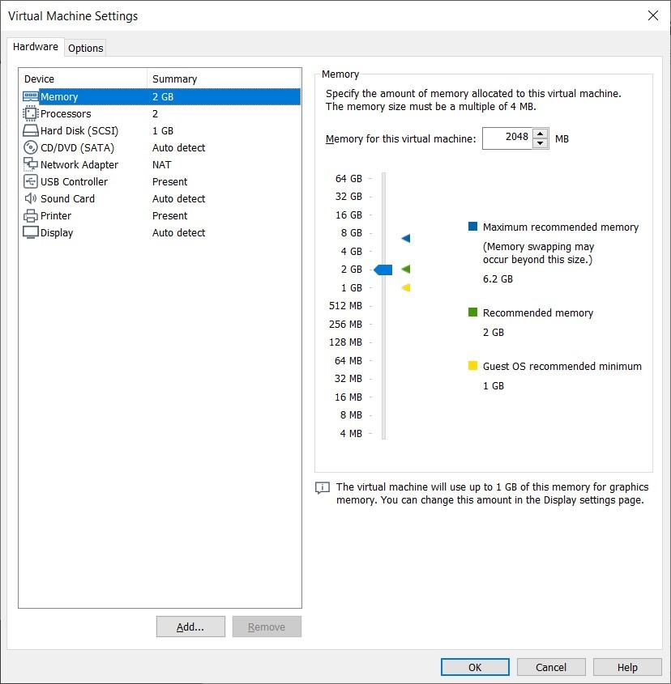

Introduction
bb1840e4-5425-49a3-9d75-477b8f016ff8
Welcome to the Cloud and Virtualization Concepts Practice Lab. In this module, you will be provided with the instructions and devices needed to develop your hands-on skills.
dc640c20-9434-45ea-b7c2-6d4d6a196bfc
Learning Outcomes
In this module, you will complete the following exercise:
- Exercise 1 - Virtualization and Cloud Computing Concepts
After completing this module, you should have further knowledge of:
- Cloud Computing Models
- Types of Clouds
- Cloud Service Providers
- Managed Service Provider (MSP)/ Managed Security Service Provider (MSSP)
- On-premises vs. Off-premises
- Edge Computing
- Fog Computing
- Thin Client
- Containers
- Micro-services/API
- Infrastructure as Code
- Serverless Architecture
- Services Integration
- Resource Policies
- Transit Gateway
- Virtualization
Exam Objectives
The following exam objectives are covered in this lab:
2.2 Summarize virtualization and cloud computing concepts.
- Cloud Models
- Cloud Service Providers
- Managed Service Provider (MSP)/ Managed Security Service Provider (MSSP)
- On-premise Vs. Off-premise
- Fog Computing
- Edge Computing
- Thin Client
- Containers
- Micro-services/API
- Infrastructure as Code
- Serverless Architecture
- Services Integration
- Resource Policies
- Transit Gateway
- Virtualization
Note: Our main
focus is to cover the practical, hands-on aspects of the exam
objectives. We recommend referring to course material or a search engine
to research theoretical topics in more detail.
Lab Duration
It will take approximately 45 minutes to complete this lab.
6cde82b4-969e-4ba2-9a1b-b030a82e21d0
Help and Support
For more information on using Practice Labs, please see our Help and Support page. You can also raise a technical support ticket from this page.
Click Next to view the Lab topology used in this module.
d2c53300-f951-45a9-9aa4-3d4ecae69e11
Lab Topology
This module contains supporting materials for Security+.

Click Next to proceed to the first exercise.
<
Home |
README >
CompTIA Security+ Practice Labs
Exercise 1 - Virtualization and Cloud Computing Concepts
From the traditional computing model, where you needed
several servers to host applications and data, organizations have
started to scale down their datacenters. Organizations have been able to
considerably reduce the number of physical servers by implementing
virtualization and cloud computing. Virtualization is a concept that
uses the physical resources of a system to run several virtual machines
on the system. Each of these machines is a virtual representation of a
physical system. Depending on the resources available, a physical system
can host several virtual machines.
Cloud computing runs on virtualization. The concept of
cloud computing is to make the infrastructure, operating systems, and
applications available to the users in a remote environment. The user
needs to have only a system and an Internet connection to access these
resources. The concept of cloud computing runs on on-demand allocation
of resources.
In this exercise, you will learn about the concepts of cloud and virtualization.
Learning Outcomes
After completing this exercise, you should have further knowledge of:
- Cloud Computing Models
- Types of Clouds
- Cloud Service Providers
- Managed Service Provider (MSP)/ Managed Security Service Provider (MSSP)
- On-premises vs. Off-premises
- Edge Computing
- Fog Computing
- Thin Client
- Containers
- Micro-services/API
- Infrastructure as Code
- Serverless Architecture
- Services Integration
- Resource Policies
- Transit Gateway
- Virtualization
Your Devices
This exercise contains supporting materials for Security+.

Cloud Computing Models
There are different types of Cloud Computing models
available. When a user is accessing something in a cloud environment,
they are accessing a cloud computing model, which defines the services
that are delivered to the users. For example, if you access gmail.com
using a Web browser, you are accessing the Software as a Service (SaaS)
model.
The business requirements of the organization govern which cloud computing model is implemented.
The types of cloud computing model are:
Software as a Service (SaaS)
In Software as a Service (SaaS), an application is
licensed to users after they purchase a subscription. The license holder
must then renew their subscription to continue using the service.
Without the subscription, only a limited features may be available for
users. Typically, users access the application through a Web browser.
Examples of SaaS include:
- Dropbox
- Microsoft OneDrive
- Microsoft Office 365
- Cisco WebEx
- Citrix GoToMeeting
- Google Apps
Infrastructure as a Service (IaaS)
Infrastructure as a Service (IaaS) is an online
service that involves the virtualization of underlying network
infrastructures, such as physical computing resources, location, data
partitioning, scaling, security, and backups. Virtual machines, virtual
network devices, and software-defined networking are also parts of the
IaaS model.
IaaS provides flexibility to upscale and downscale the infrastructure as required. This is mainly because it allows the team to:
- Create virtual machines (VMs)
- Install operating systems on each VM
- Deploy middleware
- Create storage buckets
Examples of IaaS are:
- Amazon EC2
- Cisco Metapod
- Microsoft Azure
- Google Compute Engine (GCE)
Platform as a Service (PaaS)
Platform as a Service (PaaS) is a cloud platform that
provides an infrastructure to develop web applications, without the
need for a complex infrastructure to be managed in the backend. PaaS
reduces the cost of purchasing and maintaining hardware to run these
specific applications. The Cloud Service Providers maintain the hardware
in the backend, then this Cloud Service can be purchased on a
subscription based on usage required.
Examples of PaaS are:
- AWS Databases
- Microsoft Azure Databases
Anything as a Service (XaaS)
Anything as a Service (XaaS) refers to any IT functions that can be delivered over the Internet as a service.
XaaS can also be defined as anything that a Cloud
Service Provider can offer, and it includes the above mentioned services
SaaS, IaaS, and PaaS. As cloud computing evolves, the amount and type
of services increase.
Types of Clouds
There are different types of clouds, which are known as cloud deployment models. These types are as follows:
Private Cloud
A private cloud can be set up either by the
organization itself or by a third-party service provider. A single
organization owns the private cloud, and the applications and data are
available only to the organization's users. It is generally considered a
more secure solution and provides dedicated rather than shared
computing and networking resources for the organization. Since the
organization owns this cloud, scaling up or down can be difficult,
time-consuming, and costly, but it can still be done if necessary.
Public Cloud
The public cloud works on a shared infrastructure
where services provided are rendered over the Internet. Basic public
cloud services are often free, but additional resources and features may
be purchased, either through a subscription or a pay-per-use fee. A
public cloud allows you to scale your infrastructure as and when
required, resulting in a solution that is almost always less costly than
a private cloud. However, public clouds are generally considered to be a
less secure cloud model.
Hybrid Cloud
A hybrid cloud delivery model is a composition of two
or more clouds where at least one is private and at least one is
public. These clouds remain distinct entities but are bound together,
offering the benefits of multiple deployment models.
For example, an organization can host database
servers in a private cloud, while the Web servers are hosted in a
third-party shared cloud environment. The database servers typically
store sensitive information and, therefore, need to be hosted on the
private cloud. The front-end of the database servers, which is the Web
site or Web application, is hosted on the public cloud for ease of
scalability.
Community Cloud
In a community cloud, users share the same set of
data and resources. It is accessed by multiple parties. For example,
cloud deployed for the students at a university or a college would
normally be a community cloud - accessed by all the students.
Cloud Service Providers
In a cloud environment, there are two main roles: CSP
and cloud consumers. Cloud Service Providers (CSPs) are organizations
that provide cloud services to consumers. The CSP is responsible for
providing services as well as maintaining the infrastructure and
providing security. The cloud consumer uses the cloud infrastructure and
pays a fee to the CSP.
The services provided to the user by the CSP vary
with the model of cloud involved. For example, in the SaaS environment,
the CSP delivers software to the cloud consumer. In the PaaS model, the
CSP provides the platform while the applications and data are the
responsibility of the cloud consumer. Similarly, in IaaS, the CSP
provides only a virtualized environment. The operating system,
middleware, runtime, data, and applications all are the cloud consumer's
responsibility.
Managed Service Provider (MSP) / Managed Security Service Provider (MSSP)
In a typical enterprise scenario, a technical team is
needed to manage the network, servers, and systems. For the
organization, it is a cost as well as HR overhead to hire and maintain
the team. Organizations have started outsourcing these technical
services to third-parties, known as Managed Service Providers (MSP).
MSPs manage the network, servers, and systems and provide active support
for the IT functions. Most MSPs focus on a specific set of
technologies, such as Microsoft or Linux. Payment models for these
services are normally pay-per-resource or a monthly-subscription-fee.
A Managed Security Service Provider (MSSP) helps
an organization maintain a secure digital environment. Like MSP, an
MSSP focuses on security services, applications, and devices. An MSSP is
not involved in day-to-day IT functions. Instead, it focuses on
managing and maintaining the organization's network and data security.
An MSSP focuses on the complete management and implementation of
security applications, such as Data Loss Prevention (DLP), or security
appliances, such as firewall, Intrusion Detection System (IDS),
Intrusion Prevention System (IPS) and anti-malware applications.
On-premises vs. Off-premises
Digital infrastructure can either be on-premise or
off-premise. In earlier days, most organizations hosted their
datacenters on-premise. In such cases, the organization has complete
control over the infrastructure. They can control access to the servers,
easily customize the infrastructure, and quickly cater to evolving
business demands. Moreover, on-premise datacenters are more economical
to maintain.
However, the on-premise datacenters present some
demands - an upfront financial cost of setting up the datacenter, time
and effort to set up the datacenter, and a skilled workforce to maintain
the infrastructure.
Off-premise datacenters host their servers with a
third party. For example, cloud computing. Off-premise datacenters offer
benefits such as no upfront setup fee, no maintenance cost, and
automatic upgrades of the applications and hardware.
However, off-premise datacenters do present some
disadvantages. One of the fundamental disadvantages is that the security
applied to the data is at the third-party’s discretion. Moreover, the
organization does not have control over the infrastructure. Also, you
must always have an Internet connection to access the infrastructure.
Edge Computing
Edge computing is a concept that is now evolving. As
compared to mobile computing and the Internet of Things (IoT), edge
computing works on decentralized architecture. In decentralized
architecture, each device processes data on its own rather than sending
it to a centralized server.
In edge computing, data is processed where it
originates. Mobiles, laptops, IoT devices, and tablets are the primary
devices that generate data. Data is processed on these devices, and this
brings efficiency in using these resources. Moreover, as the devices
process the data themselves:
- Devices do not need to be connected to a corporate network all the time
- There is no latency of data transmission
- There is no dependency on a single centralized server
- The centralized server does not become a response-bottleneck
It is also important to note that sometimes edge
computing and IoT are incorrectly considered synonyms of each other. As
stated earlier, the data-generating devices process the data themselves.
On the other hand, the IoT devices are connected to a centralized
server that processes the device requests and queries. This introduces
latency issues.
Fog Computing
Fog computing allows you to specify the data to be
processed locally, and the data to be pushed to cloud for centralized
processing. This specification is governed by the business requirements
of the organization.
The limited amount of data going out of the network
to the cloud reduces the bandwidth requirement. Further, in case there
is no bandwidth available, the data can still be processed on the device
where the data originated.
Thin Client
A system would have enough storage, memory, and CPU
power to run various applications in a normal scenario. However, this is
not the case for thin clients that have limited resources. A thin
client connects to a central server where all the processing takes
place. A server has enough resources to support several thin clients as
well as run various applications.
Clients connect to the server using the Remote
Desktop Protocol and work directly on the server. Using thin clients
offers various benefits, such as users cannot install unauthorized
applications on the server or thin clients, data cannot be moved out of
the server unless permitted by the administrator. Moreover, thin clients
are easy to manage as no applications are running on them, and all
policies are deployed on the centralized server.
Containers
Containers work on the concept of compartments. You
can deploy multiple containers on a single host, and each container can
run different applications. An important feature of containers is that
the operating system is the same for all the containers on a single
physical host. This contrasts with the virtual machine that can run
different operating systems on the same physical machine. To run
containers with different operating systems, you need to deploy them on
different physical hosts with different operating systems.
Containers enable you to have native performance for
an application. Since a container runs a part of the operating system,
there is generally less overhead, and you get good performance from the
hosted application.
Containers are quick to create, lightweight, and
start as soon as the operating system boots. This avoids any latency in
setting up and running applications.
However, the operating system being the same on all
the containers on a physical system introduces the disadvantage that any
vulnerability in the OS kernel affects each container running on the
operating system.
A container consists of four layers, in the following order:
1. Operating system
2. Container engine
3. Binaries and libraries
4. Application
Fundamental differences between virtualization and containerization include:
Speed: Containers start with the operating
system as it is loaded. Therefore, the start is immediate. However,
virtual machines need to load the complete operating system which will
affect the start-up time of the virtual machines.
Resources: Containers start immediately with
the operating system, and therefore, there is little system resource
consumption. For example, a container consumes a small portion of memory
on startup. On the other hand, there can be multiple virtual machines
running on a single physical host, and each virtual machine requires its
share of system resources. This can overload the physical server, which
ultimately impacts the functionality of the virtual machines.
Security and isolation: Containers run within
the operating system. The containers can isolate the applications and
their data only at the process level, and they are less secure. On the
other hand, virtual machines run separately and in isolation. Therefore,
virtual machines are more secure than containers. If the operating
system is compromised, then all the containers can also be compromised.
This, however, is not true for various virtual machines running on a
physical machine.
Portability: Containers are much smaller in
size, and therefore, they are easy to port. Porting a virtual machine
includes porting configuration files and libraries as well. Therefore,
the porting size of the virtual machines can be much larger, and
potentially a problem.
Operating system: A virtual machine can run an
independent operating system on a physical host. Containers can run
only the operating system that the host is running.
Microservices/API
Microservices is an architectural pattern that allows
you to develop applications using different independent services. These
services are loosely coupled, meaning that they do not have
dependencies on each other. They can be independently deployed with
different software. For example, a single API can be used with more than
one software application. It could be integrated with an internal human
resource software application or with a payroll software application,
depending on the requirement. These services are mostly developed to
meet specific business objectives.
To develop a complex application rapidly and
reliably, you can put together a set of services based on different
technologies and programming languages. With the use of microservices,
the data is not centrally controlled. Rather, the data is decentralized
in which each of the services can use its storage mechanism and type
individually and will not be reliant on other resources to function.
Application Programming Interface (API)
An API is an interface that allows two different
applications to connect and share data. There are primarily two types of
APIs used for this purpose:
Representational State Transfer (REST)
Representational State Transfer (REST) is an
architectural style or API used with Web applications, mobile apps,
games, or anything that runs on the Internet. It uses stateless calls,
which means that it does not store client/server context. It can also
work with different formats, such as JSON, XML, and HTML. It provides
improved performance by using cacheable responses, which reduces the
number of calls made to the server.
Simple Object Access Protocol (SOAP)
SOAP is a protocol or API that is primarily used for
data exchange. It is driven by a set of rules that must be adhered to
for an interaction between two entities. It can be accessed via various
protocols, such as HTTP, SMTP, and TCP. It can only use XML, unlike REST
that can use various formats. A SOAP request cannot be cached, and
therefore, for every request, interaction needs to occur, and there is
more consumption of bandwidth and system resources.
Infrastructure as Code
To develop an application, you first set up the
infrastructure. Setting up the infrastructure is normally a
time-consuming activity and could include:
- Setting up and managing servers
- Installing and configuring operating systems
- Configuring database connections
- Configuring storage
Infrastructure as code (IaC) helps bring automation
in provisioning the IT infrastructure. IaC is a high-level descriptive
coding language that automates setting up the entire infrastructure.
This means you do not have to manually setup or provision the IT
infrastructure.
When developing an application, all these tasks are
performed repeatedly. You not only lose time, but there can also be
consistency issues. IaC helps provision the infrastructure with speed,
consistency, and lower cost.
Examples of IaC include:
- AWS CloudFormation
- Red Hat Ansible
- Chef
- Puppet
- SaltStack
- HashiCorp Terraform
Software-Defined Networking (SDN)
Networks can be large and complex, making them
difficult to manage. Software-Defining Networking (SDN) enables you to
program such networks for the ease of management. You can use specific
applications to control and manage the networks without worrying about
the technologies that are used to make up the network. In simpler terms,
it could be any underlying technology that runs the network, then you
can simply control the network with specific applications.
To be able to able to manage and control the network,
you need to program the network functionality and behavior. This is
done through specific applications that use APIs.
One big advantage of SDN is openness, as it allows
you to integrate technologies from different vendors and use them on the
network without adding any complexity.
Software-Defined Visibility (SDV)
In a large and complex network, you would have
several security appliances, devices, and applications. Some of these
could be an Intrusion Prevention System (IPS), Intrusion Detection
System (IDS), firewall, or a Web Application Firewall (WAF). Along with
this, organizations use a multi-tiered approach by implementing security
information and event management systems (SIEM). However, the problem
with these is that they can only monitor the traffic that they see.
There can be certain parts of the network that are
considered blind spots, which means that they are not being monitored.
This type of issue is resolved with SDV, which helps you
programmatically integrate your security tools and applications. They
can be programmed to report the anomalies in the traffic to a central
location so that the visibility can be expanded.
Serverless Architecture
Serverless architecture, also known as Function As A
Service (FaaS), is based on the cloud. The developer does not have to
set up the infrastructure, which is completely managed and handled by
the cloud service provider. The developer can focus on developing the
application rather than spending time setting up the infrastructure.
With the serverless technology, the applications are built directly in
the cloud environment. The applications run on the servers as they do in
the on-premises infrastructure, however, without the developer worrying
about the underlying infrastructure. As and when required, there is
automatic provisioning and scaling of the underlying infrastructure.
There is often confusion between PaaS and FaaS. Both
of these services are based on the concept of running an application in
the cloud. However, the underlying architectures are fundamentally
different. In PaaS, the entire application is run as a single unit,
which means that the scaling is done at the application level. However,
in FaaS, the scaling is done at the function level because it is
composed at the function level. As and when required, the functions can
be scaled individually. This saves many system resources, because only
selected functions might be consuming more resources than the others.
An existing application will need to be architected
again to run as small independent functions. Serverless architecture is
good to use when you have a limited number of functions.
Services Integration
An organization may need to use various services from
different service providers to meet business requirements. Coordinating
these services can be a difficult task. For ease of managing the
services, the organization can implement service integration.
Integrating services enables the organization to manage them using a
single interface.
The Service Integration and Management (SIAM) model
helps the organization apply the required governance and management to
these services. SIAM intends to bring in integration and collaboration
amongst the suppliers so that each one of them knows their roles,
responsibilities, and deliverables.
As an example of implementing the SIAM model, an
organization may have to integrate services from say, the Internet
Service Provider (ISP) and the Cloud Service Provider (CSP).
Resource Policies
A resource policy defines access to the resources on a
network. A resource can be a file, folder, server, or even a specific
service. An administrator can configure a resource policy to either
allow or deny access to a user or a group of users. Applying the
resource policy grants specified rights to the user or the group.
There can be different types of resource policies.
For example, a Web resource policy can allow or deny access to users on a
Web resource. Similarly, an Email resource policy could prevent a user
from opening certain attachments.
Transit Gateway
A transit gateway is a communication hub that is
required to interconnect two clouds or an on-premise data center to a
cloud infrastructure.
Various interfaces are available to create and manage
a transit gateway. For example, when working with Amazon AWS, you can
set up a transit gateway, which allows not only the ease of
connectivity, but also allows you to manage the network connections
using a central console. Another benefit of using an AWS transit gateway
is security. The transit gateway on Amazon AWS remains within the cloud
and is not exposed on the Internet.
Virtualization
A physical system contains physical resources, such
as CPU, memory, network adapter, and storage. An operating system uses
these resources to run on the system. However, only one operating system
can run per physical system.
Virtualization, on the other hand, enables multiple
virtual systems to run on a single physical machine. This is because it
allows a single processor on the server to act as multiple processors.
Similarly, virtualization allows the physical resources of a system to
be emulated as multiple virtual systems. The multiple virtual machines
running on a system are isolated from each other.
Each virtual machine works like a normal system,
except that it does not have any physical hardware. Hypervisor is a
software application, that is required on the physical machine to create
and manage virtual machines. A hypervisor enables multiple operating
systems to run in parallel and virtually share the system resources.
These operating systems run within a shell known as a virtual machine.
The virtual machine is a guest computer that has the specified operating
system and the specified virtual hardware. Hypervisor enables you to
edit and customize the virtual machine settings.
Figure 1.1 Screenshot of a Windows desktop: Virtual machine configuration properties are listed in a hypervisor interface.
Virtual Machine (VM) Sprawl Avoidance
VM sprawl occurs when there are too many virtual
machines without any kind of proper control or management. Some virtual
machines may be running, but then there are others that are in an idle
state and have not been used for a long time. VM sprawl is a common
issue faced by virtual machine administrators. There are no fixed
methods to control the virtual machine sprawl, but the following best
practices can be used:
- Create a library of virtual machine images
- Use Virtual Machine Life Cycle Management Tool
- Limit the permission for the creation of virtual machines
Shutting down virtual machines does not reduce VM sprawl.
VM Escape Protection
VM escape is a vulnerability that enables an attacker
to gain direct access to the host operating system and interact with
the system's hypervisor. Gaining access to these resources will enable
the attacker to perform specific administrative tasks, including
creating and deleting virtual machines. In addition to that, the
attacker will also be able to modify the privileges of the compromised
virtual machine.
To prevent VM escape, the following can be implemented:
- Ensure the virtual machine’s software is up to date
- Install only trusted and required software on the virtual machines
- Use best practices to harden to virtual machine against attacks
7429868b-128c-4069-95a9-7246a6a9e5a3
d31298f5-3011-4089-bf06-fbf08c44a7f9
Keep all devices that you have powered on in their current state and proceed to the review section.
Review
Well done, you have completed the Cloud and Virtualization Concepts Practice Lab.
c6e74811-6d1f-4779-94c2-34fcca239022
b6d69a13-eb2d-4538-b197-f1fcb155a848
44d5f803-6ba5-40d4-a839-09b69173c59e
7b7ea2a8-b3a0-4587-88ca-2b9c5c3fdff7
d8ef17e3-d505-4bf8-8399-c9ac1ebcb991
519b8b8f-f05c-4d44-b06d-04a5c785a3ed
aaaaaaaa-1111-1111-1111-193f35a24fe3
Summary
You completed the following exercise:
- Exercise 1 - Virtualization and Cloud Computing Concepts
You should now have further knowledge of:
- Cloud Computing Models
- Types of Clouds
- Cloud Service Providers
- Managed Service Provider (MSP)/ Managed Security Service Provider (MSSP)
- On-premises vs. Off-premises
- Edge Computing
- Fog Computing
- Thin Client
- Containers
- Micro-services/API
- Infrastructure as Code
- Serverless Architecture
- Services Integration
- Resource Policies
- Transit Gateway
- Virtualization
Feedback
067744a4-4299-4662-b5be-04dbb636a007
Shutdown all virtual machines used in this lab. Alternatively, you can log out of the lab platform.